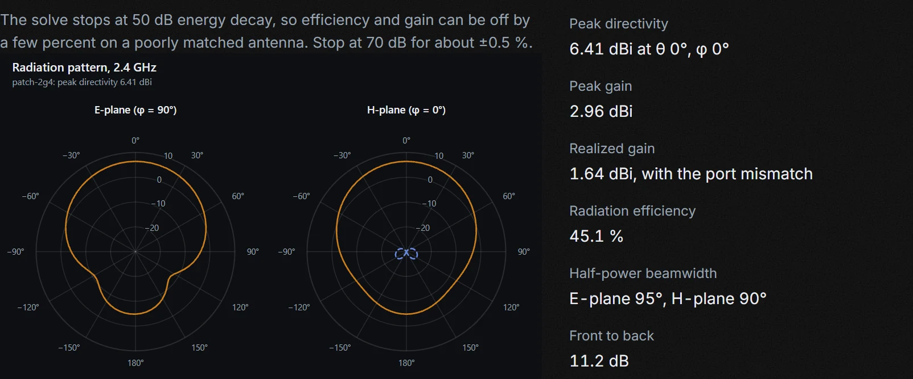
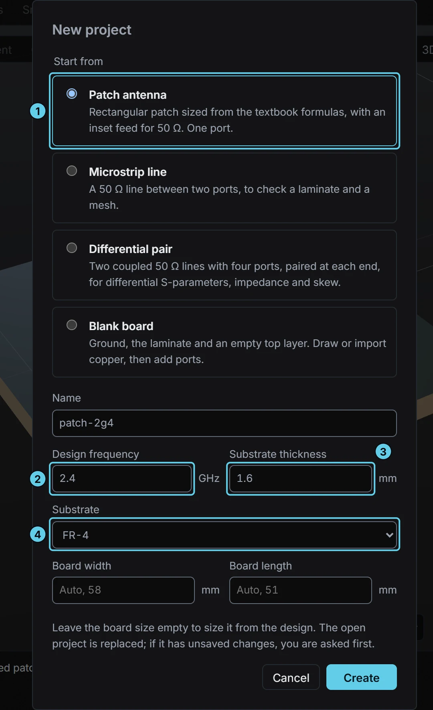
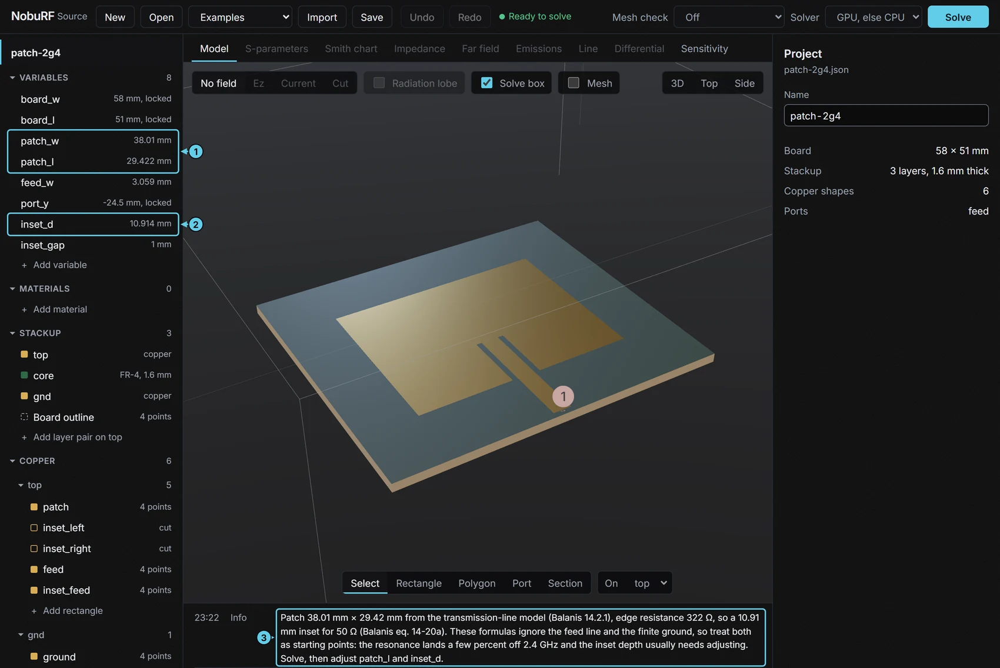
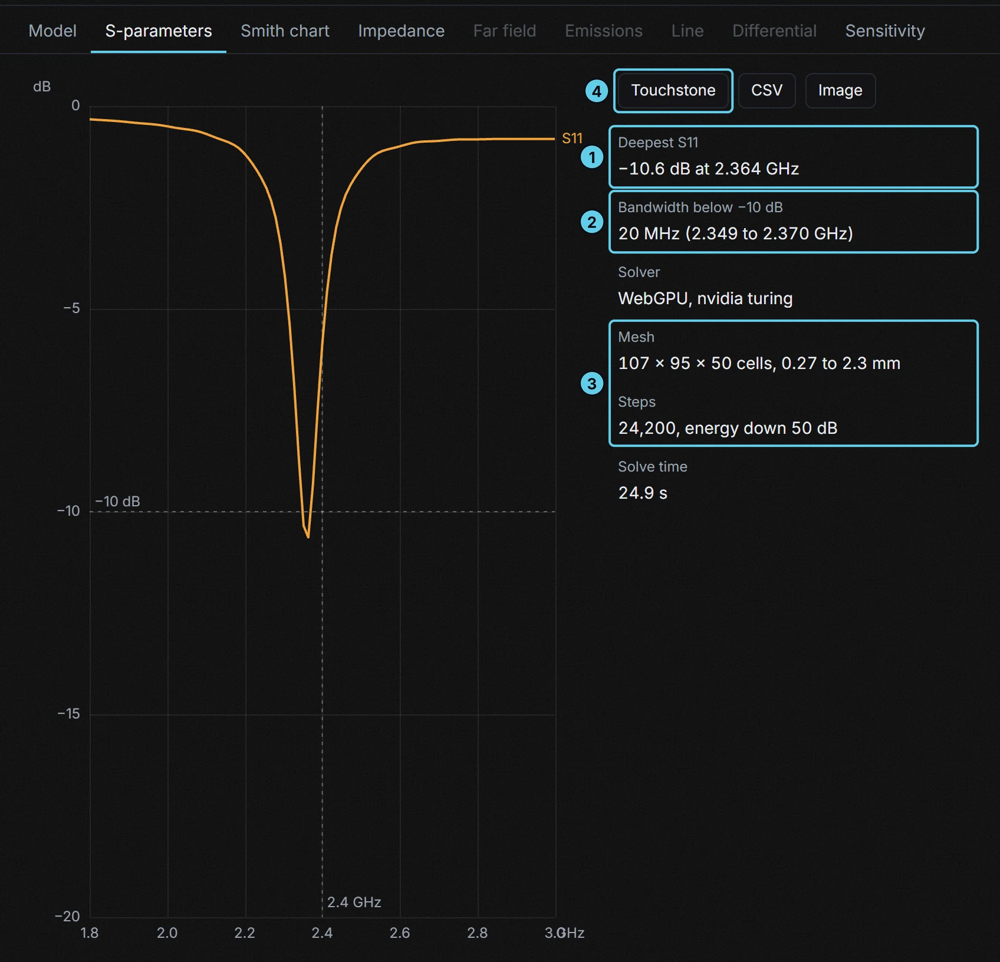
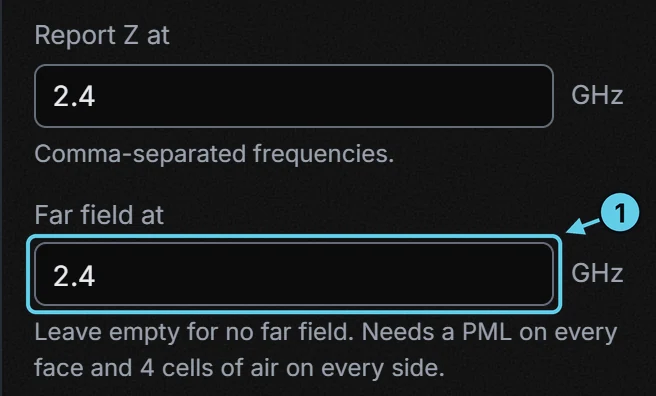
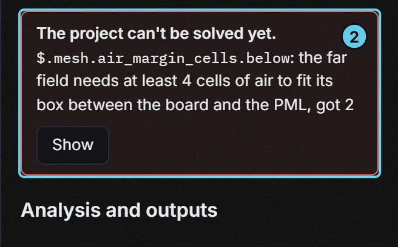
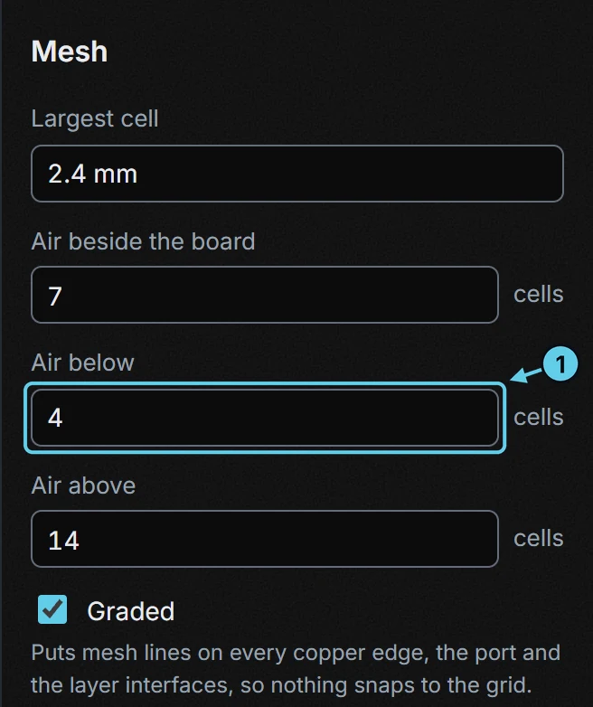
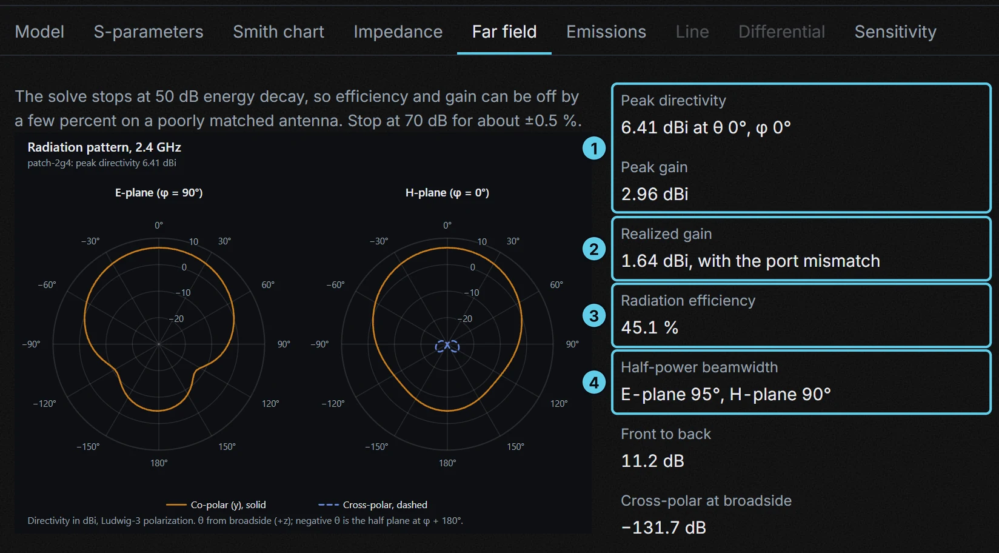
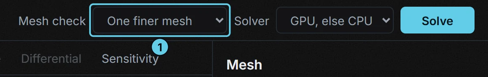

Simulate a 2.4 GHz PCB antenna
NobuRF is a free 3D field solver that runs in Chrome or Edge. It starts a 2.4 GHz patch antenna on FR-4 from three numbers, solves it, and exports the S-parameters as a Touchstone file.

A 2.4 GHz patch, step by step
Open the workbench in Chrome or Edge 113 or later.
-
Start a patch antenna
Choose New in the toolbar. Leave the board size empty and NobuRF sizes the board from the design.
- Patch antenna: a rectangular patch sized from the textbook formulas, with an inset feed for 50 Ω.
- Design frequency, 2.4 GHz, typed over the default of 2.45 GHz.
- Substrate thickness, 1.6 mm.
- Substrate, FR-4. Then Create.

-
Check the model
NobuRF sizes the patch from the transmission-line model and cuts an inset for 50 Ω, on a 58 by 51 mm board. Every dimension is a variable you can change, as the drawing under these steps shows.
- patch_w and patch_l: 38.01 by 29.42 mm.
- inset_d, the inset depth: 10.91 mm.
- The console says where the numbers come from, and that they are a starting point: the formulas ignore the feed line and the finite ground.
Then press Solve.

-
Read S11
When the solve ends, open the S-parameters tab. On a laptop's GTX 1660 Ti this one took 25 s.
- The resonance: S11 dips to −10.6 dB at 2.364 GHz, 1.5 % below the design frequency.
- The band below −10 dB: 20 MHz, from 2.349 to 2.370 GHz.
- The mesh, 107 by 95 by 50 cells, and the 24,200 time steps it took for the field energy to fall by 50 dB.
- Touchstone exports the S-parameters for a circuit simulator.
To tune it, shorten
patch_lto move the resonance up and changeinset_dto deepen the match. A deeper match also widens the band, though a patch on 1.6 mm FR-4 may still fall short of the 83.5 MHz of the 2.4 GHz band.
-
Ask for the far field
For the radiation pattern and gain, open Setup, then Analysis and outputs, in the project tree.
- Far field at: 2.4 GHz.
- The panel says what is missing before you solve: the far field needs 4 cells of air below the board, and the template leaves 2.


-
Add air below the board
Open Setup, then Mesh, and solve again once the message is gone.
- Air below: 4 cells.

-
Read the pattern
When the second solve ends, open the Far field tab.
- Peak directivity, 6.41 dBi at broadside, and peak gain, 2.96 dBi.
- Realized gain, 1.64 dBi, which also counts the power the port mismatch reflects.
- Radiation efficiency, 45.1 %: loss in the FR-4 and the copper takes more than half the power the patch accepts.
- The half-power beamwidth: 95° in the E-plane, 90° in the H-plane.

-
Check the mesh
Before you trust a result, set Mesh check to One finer mesh and solve again. It also solves on smaller cells and puts an error bar on the resonance, so it takes several times as long.
- Mesh check: One finer mesh.
For another antenna, start from a blank board and draw the copper, or import your layout as Gerber, DXF or STEP, then add a port where the feed meets the antenna.



What the template draws
Which results to trust
On low-permittivity boards, the nearest published measurement is a 57 by 38 mm patch from Chang et al. (1986) on a 3.2 mm board with εr 2.33, measured at 2.310 GHz. NobuRF puts it at 2.354 GHz, 1.9 % high, read as Chang did at the peak of input resistance. Read at the S11 dip, NobuRF lands 4 to 6 % high on those patches. The checks are in the validation report.
On FR-4, NobuRF agrees with openEMS to within 0.4 % on resonance (see the openEMS comparison), but both are FDTD codes, and I haven't measured a NobuRF board on a VNA yet. With Mesh check on, the results list FR-4 as outside the validated range.
The built-in FR-4 has εr 4.4 and a loss tangent of 0.02. Real FR-4 varies by maker and batch, and a 1 % change in εr moves a patch's resonance by about 0.5 %, so use your fab's numbers where you have them.
Inverted-F and meander antennas can be drawn or imported, but I haven't compared any with a measurement or another solver yet. Confirm them on a prototype before you order boards.
Size and run time
A 2.4 GHz board is about twice the size of the 5.8 GHz demo in each direction. The patch on this page meshed to 0.51 million cells and ran 24,200 time steps: 25 s on a laptop's GTX 1660 Ti in Edge, and 37 s for the second solve with the far field. Without a GPU, WebGPU runs in software and the same solve takes tens of minutes. If a grid doesn't fit in WebGPU, the workbench says so and offers the CPU solver.